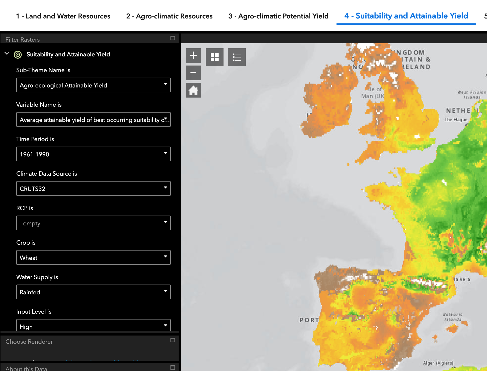
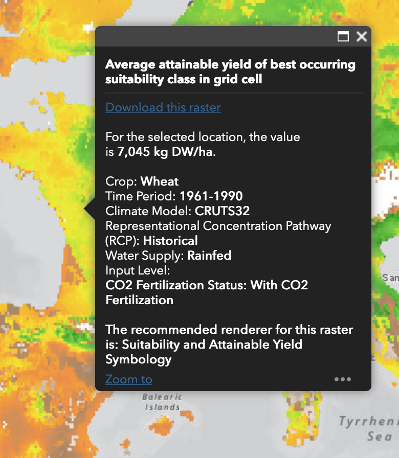

gaez_download.RdGAEZ v4 data is available via an online Image Service server. Querying a certain URL, properly composed, serves a raster image to the user for download. The corresponding base URLs are available in the first table of the Data Access page of GAEZ.
gaez_download(
cropcode,
variable = "yl",
input = "H",
irrigation = "r",
co2 = "0",
scenario = c("CRUTS32", "Hist", "8110"),
dir = ".",
res = "res05/"
)string one code from data(crops)
string variable name
string "H" or "L"
string code from irrigation()
string "0" or "1"
vector of string with 3 elements: Climate Model, Climate Scenario, Time period.
path to folder where GAEZ data will be stored. Default .
string indicating the GAEZ theme (e.g. "05" corresponds to Theme 4, Suitability and Attainable Yield)
This function composes a URL string and sends the query to the server. For example, one can download GAEZ data for a certain GAEZ theme, a given crop, input and irrigation settings for a certain scenario into a corresponding folder on disk. The simplest way to compose an URL is to use the GAEZ data viewer, following the steps below. The viewer looks like this: 
choose appropriate theme on top
Choose a variable (if known-else leave blank for default choice): not all variables are available in all combinations
Choose Time period (or leave blank)
Choose Climate Model. available via climate_models()
Choose RCP scenario (only if making extrapolation to the future): available via rcps()
Choose a crop. via data(crops)
Choose Water Supply. codes in irrigation()
Choose an input level (high or low)
Choose with or without CO2 fertilizer
The image on the right of the dropdown menus is your current raster, which can be downloaded. You will notice that not all data is available in all parts of the world.
In the data viewer, zoom into a region of interest and click on an arbitrary pixel, as illustrated here: 
In the appearing popup menu, right click on link download this raster. It will have a form like https://s3.eu-west-1.amazonaws.com/data.gaezdev.aws.fao.org/res05/CRUTS32/Hist/6190H/ycHr0_whe.tif, which composes as follows:
Base url: https://s3.eu-west-1.amazonaws.com/data.gaezdev.aws.fao.org
GAEZ theme: res05
Climate Model: CRUTS32
Climate Scenario: Hist for past, one of several RCP scenarios for future.
Time Period: 6190H stands for 1961 thru 1990 Historical
The Variable name: ycHr0_whe.tif
yc stands for Average attainable yield of current cropland. Other values in Theme 4 are for example yl (Output Density (potential production divided by total grid cell area)) or yx (Average attainable yield of best occurring suitability class in grid cell)
H is the choice of input level (High or Low)
r whether rainfed (see irrigation())
0 whether there is CO2 fertilization.
whe is the crop code from data(crops).
Christophe Gouel wrote the core of this function. Florian Oswald rearranged and wrote the supporting documentation.